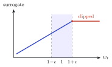
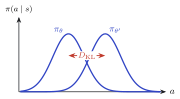
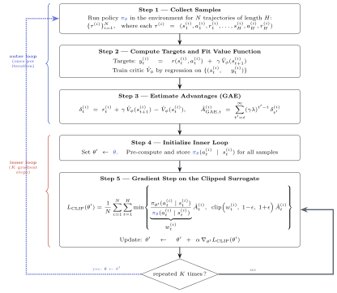
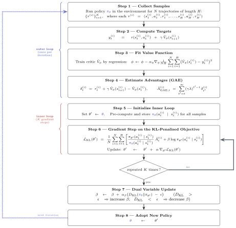
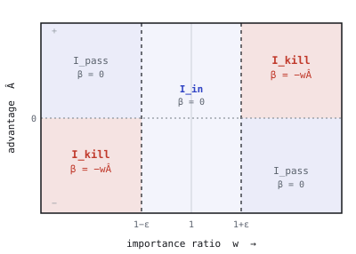

KLip-PPOA per-sample KL perspective on PPO-Clip
* equal contribution
The clipped surrogate and a KL penalty are treated as separate algorithms. We show the clipped gradient is reproduced exactly by a KL penalty whose coefficient varies per sample, so the two produce indistinguishable training curves:
Proximal Policy Optimization (Schulman et al., 2017) is the default algorithm for on-policy reinforcement learning. Each update maximises an importance-weighted return while keeping the new policy \(\pi_{\theta'}\) close to the policy \(\pi_\theta\) that collected the data. Each sampled action carries an importance ratio \(w_t=\pi_{\theta'}(a_t\mid s_t)/\pi_\theta(a_t\mid s_t)\), measuring how much the policy changed on it, and an advantage \(\hat A_t\) estimating how much better the action was than expected. PPO keeps \(w_t\) close to one in one of two ways.
Public run histories, configs, logs, metrics, and checkpoints are available as reproducibility artifacts in the KLip-PPO W&B project.
PPO-Clip caps the ratio: once \(w_t\) leaves the band \([1-\epsilon,\,1+\epsilon]\) in the advantage-improving direction, the objective stops rewarding that sample.
PPO-KL instead subtracts a penalty proportional to the Kullback–Leibler divergence between the two policies, paying for every unit of drift.


Since 2017 these have been read as separate algorithms, with their own gradients and hyperparameters, and a large literature compares them task by task. As training loops they look unrelated:


They are not alternatives. The clip is itself a KL penalty, applied one sample at a time.
Fix one update. Whether the clip changes a sample's gradient depends only on its ratio \(w_t\) and advantage \(\hat A_t\), which split the batch into three disjoint sets:
So the clip's only effect is to zero the gradient on the kill set. A per-sample KL penalty with coefficient \(\beta_t=-w_t\hat A_t\) on the kill set (and \(0\) elsewhere) zeroes exactly those gradients and leaves the rest untouched; added to the unpenalised surrogate it reproduces the PPO-Clip gradient sample for sample:

The match is exact and global: it holds at every parameter setting \(\theta'\) and across the whole inner loop, while the original PPO paper argued only a first-order agreement near \(\theta_{\mathrm{old}}\). Statement and proof →
Because they share a gradient, the clip and the per-sample KL surrogate train the same way. The two panels below show the logged returns for PPO-Clip and per-sample KL (mean over five seeds, on a shared scale); the curves stay together on every task.
The scalar baselines and the full four-way comparison are on the experiments page.
The identity lets PPO-Clip be written three ways that compute the same gradient but place the penalty in different spaces. All three share the reward term \(w_t\hat A_t\) and differ only in how they express the penalty: hidden in a \(\min\), on the importance weight, or on the policy.
Schulman et al., 2017. The \(\min\) hides the penalty; only its effect is visible.
A dual form (Appendix A): the penalty \(\Phi\) subtracts how far \(w_t\) overshoots the band, on the kill samples.
The per-sample KL form. PPO-Clip fixes \(\beta_t\) to a step on the boundary; the per-sample view makes that step an explicit choice.
The identity removes the opposition between the two surrogates. PPO-Clip is a KL penalty, with the per-sample coefficient \(\beta_t\); so whatever edge clipping has shown over PPO-KL is an edge over a single scalar coefficient, which our experiments confirm on the high-dimensional tasks.
That reframes the open question as the shape of \(\beta_t\). The clip fixes it to a hard step on the trust-region boundary; soft relaxations and asymmetric or position-aware coefficients are other choices within the same surrogate family, now reachable as design knobs rather than separate algorithms.